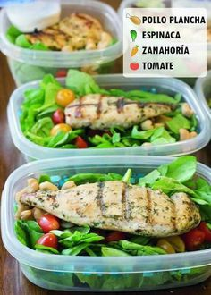

Welcome to
¿Qué es Saludable? » Su Definición y Significado [2021]
2021.06.02 14:34
Letras Letra A Letra B Letra C Letra D Letra E Letra F Letra G Letra H Letra I Letra J Letra K Letra L Letra M Letra N Letra Ñ Letra O Letra P Letra Q Letra R Letra S Letra T Letra U Letra V Letra W Letra X Letra Y Letra Z Categorías Ciencia Economía Educación Humanidades Psicología Salud Definición › S › Salud 🩺 › Saludable
Saludable
Aquello “saludable”, es lo que, de acuerdo al beneficio que traiga para el organismo y su funcionamiento, puede afectar de forma positiva al cuerpo humano . De igual forma, este adjetivo puede ser utilizado en aquellas personas que, debido al estilo de vida y la dieta que llevan, goza de buena salud y tiene un aspecto saludable. Otros usos de la palabra se refieren a aquello que, simplemente, resulta lleno de beneficios para algo o alguien. Esta palabra puede ser utilizada como un sinónimo de sano, aquello que no presenta lesiones, enfermedades o condiciones negativas. Lo saludable no sólo se remite a lo que es tangible, como los alimentos, sino que también puede referirse a estados anímicos , como la preocupación, la ansiedad, entre otros.
Generalmente, se relaciona lo que es saludable con una dieta rica en frutas y vegetales, además del constante ejercicios y los chequeos médicos esporádicos. Expertos recomiendan que, para mantener una vida equilibrada y feliz, es importante cuidar del propio, para pulir el potencial que se posee. Esto es posible con determinación y la orientación de expertos en la salud y la nutrición, quienes determinarán cuáles son las mejores opciones a seguir con respecto a los cambios que se realizarán. En el proceso, se incluirán objetos y alimentos considerados saludables.
Las personas que obran sin intenciones negativas o malicia, son llamadas personas insanas. Asimismo, todo lo que pueda influenciar de forma positiva a una persona , también puede recibir el adjetivo de saludable. En el habla popular, la expresión “cortar por lo sano”, hace referencia a confrontar un problema o conflicto de forma pacífica, promoviendo el diálogo.
Alimento APS (Atención Primaria de Salud) Dieta
Bibliografía
, Redacción. ( Última edición:14 de abril del 2021). Definición de Saludable. Recuperado de: https://conceptodefinicion.de/saludable/. Consultado el 2 de junio del 2021
Comparte este artículo
Conceptos recientes:
Anillo de Compromiso Bolsa de Trabajo Resistencia Eléctrica Área 51 Alcoholismo Números en inglés Ficha BibliográficaRelacionados
Concepto de Satisfacción
Concepto de Significado de los sueños
Concepto de Sistema inmunológico
Concepto de Sistema Óseo
Concepto de Sílaba
Concepto de Sensualidad
Concepto de Sociología
Concepto de Sustancia
*
Inicio Política de cookies Politica de Privacidad Terminos de servicio Contacto© 2011-2021 Concepto Definición. Todos los derechos reservados.
